where \[P(x) = \begin{cases}
1 & x \in [0,1), \\
0 & x \notin [0,1).
\end{cases}\]
[Solution:] Consider the homogeneous equation
\[
\frac{dy}{dx} - P(x)y = 0,
\]
by separating the variables we have \(\frac{dy}{y} = P(x)dx\), namely \(\ln|y| = \int_0^x P(t)dt + C_1\), and we get
\[
y = Ce^{\int_0^x P(t)dt} = \begin{cases}
C & x < 0 \\
Ce^x & x \in [0,1) \\
Ce & x \geq 1.
\end{cases}
\]
Now by variation of parameters we suppose \(u = u(x)\), and \(y = u(x)e^{\int_0^x P(t)dt}\) is the solution, hence
\[
u'(x) = e^{2x - \int_0^x P(t)dt} = \begin{cases}
e^{2x} & x < 0, \\
e^x & x \in [0,1), \\
e^{2x-1} & x \geq 1.
\end{cases}
\]
(this is because :
The differential equation is given by: \[
y' + p(x)y = f(x).
\]
Integrating factor is: \[
e^{\int p(x)dx}.
\]
Multiplying through by the integrating factor: \[
\frac{d}{dx} \left[ e^{\int p(x)dx} y \right] = f(x) e^{\int p(x)dx}.
\]
Solving for \(y\):
\[
y e^{\int p(x)dx} = \int f(x) e^{\int p(x)dx} dx + C.
\]
Thus, the general solution is: \[
y = Ce^{-\int p(x)dx} + e^{-\int p(x)dx} \int f(x) e^{\int p(x)dx} dx,
\] where \(y_c\) represents the complementary solution \(Ce^{-\int p(x)dx}\) and \(y_p\) represents the particular solution \(e^{-\int p(x)dx} \int f(x) e^{\int p(x)dx}\).
Read “Differential Equations with Applications and Historical Notes” by George F. Simmons
Differential equations are the heart of analysis, which is the natural goal of elementary calculus and the most important part of mathematics for understanding the physical sciences.
(similar to a orthognal basis in linear algebra, to obtain the Fourier series). Specifically, we start with the orthogonal set {1, sin, cos, …}. By projecting the function onto these basis functions or computing the inner product three times—(f, 1), (f, cos), and (f, sin)—we can derive the Fourier series representation of the function.
Proof
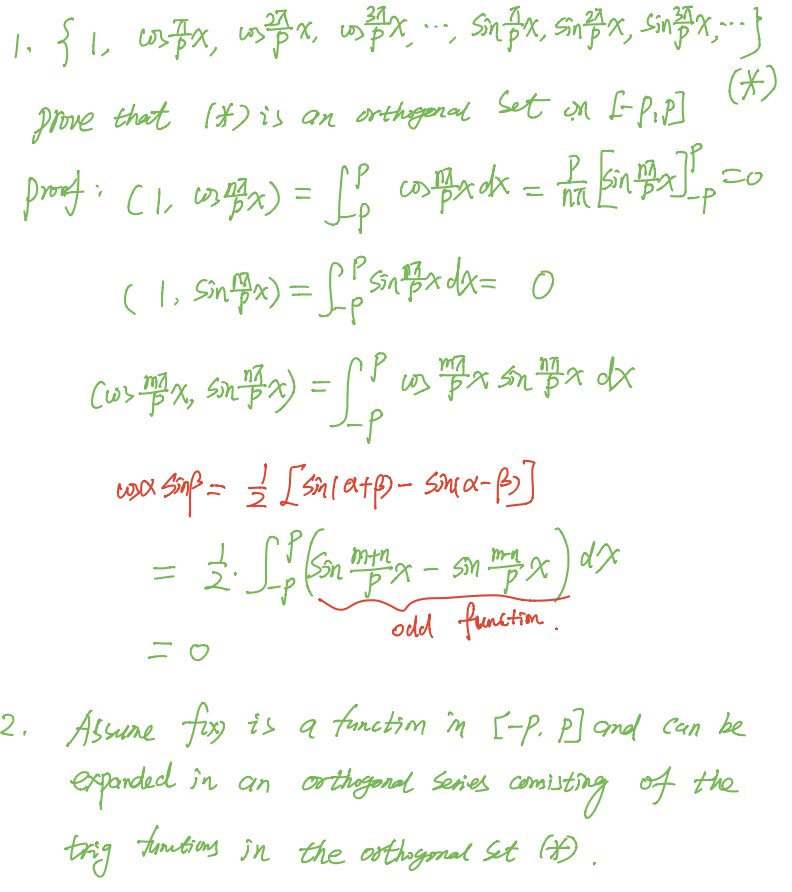
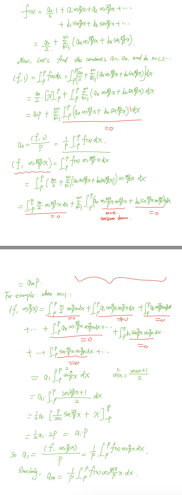
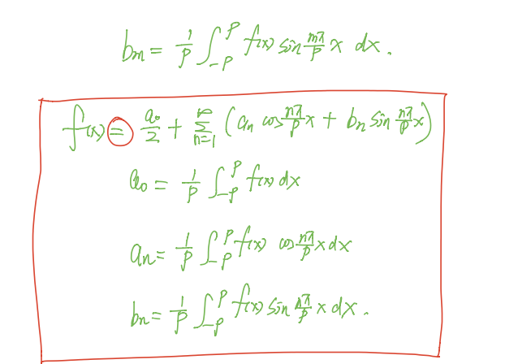
THM
piecewise continuous function
A function f(x) is piecewise continuous on an interval [a, b] if it is continuous on each subinterval (open interval) of [a, b] and has a finite number of (or jump) discontinuities in the interval. The function can be defined in pieces, and at each piece, it must be continuous.
thm–condition for convergence
f, and f’ are piecewise continuous on [-p,p], then for every x $$ [-p,p], the Fourier series of f(x) converges to f(x) at every point x in [-p,p] where f is continuous. If f has a jump discontinuity at x, the Fourier series converges to the average of the left-hand and right-hand limits of f at x.
Integrating factor is the translation of the diffrentiation operation
\(y'+ky = f(x)\) is just \((D+k)y=f(x)\)–> y=1/(D+k)f(x)
So the solution of y = \(\frac{1}{e^{kx}} \int e^{kx} f(x) dx\) is the same as the solution of y=1/(D+k)f(x)
eg. \(1/(D-2) (xe^x) = e^{-2x} \int e^{x} e^{2x} x dx = e^{-2x} \int e^{3x} x dx = e^{-2x} (e^{3x} (1/3)x - 1/9 e^{3x}) = 1/3 x e^x - 1/9 e^x\)
result <-0.927/6tan(5.356)
[1] -1.333028
atan(5.356)
[1] 1.386215
tan(-0.9271752)
[1] -1.333
0.8*cos(8*pi/12)
[1] -0.4
0.8*cos(8*pi/8)
[1] -0.8
0.8*cos(8*pi/6)
[1] -0.4
0.8*cos(8*pi/4)
[1] 0.8
0.8*cos(8* (9*pi/32))
[1] 0.5656854
0.8*cos(8*3*pi/16)
[1] -1.469576e-16
-6.4*sin(8*3*pi/16)
[1] 6.4
use this idea we introduce the method of variation of parameters of finding the particular solution of the non-homogeneous linear equation system
….
method of using the matrix exponential to solve the system of ODEs
We can differentiate \(e^{tA}\) with respect to \(t\) and obtain
\[
\begin{align*}
\frac{d}{dt} e^{tA} &= A + tA^2 + \frac{t^2}{2!}A^3 + \frac{t^3}{3!}A^4 + \cdots \\
&= A \left( 1 + tA + \frac{t^2}{2!}A^2 + \frac{t^3}{3!}A^3 + \cdots \right) \\
&= Ae^{tA}
\end{align*}
\] as one would expect from differentiating the exponential function. We can therefore formally write the solution of
\[
\dot{x} = Ax \qquad x(0) = e^{tA}x(0)
\]
If the matrix \(A\) is diagonalizable such that \(A = S\Lambda S^{-1}\), then observe that
If \(\Lambda\) is a diagonal matrix with diagonal entries \(\lambda_1, \lambda_2,\) etc., then the matrix exponential \(e^{t\Lambda}\) is also a diagonal matrix with diagonal entries given by \(e^{\lambda_1 t}, e^{\lambda_2 t},\) etc.
We can now use the matrix exponential to solve a system of linear differential equations.
Plz write the Cauchy-Euler equation as the simplest one and THEN use the method of variation of parameters!!!
Motivation from Professor Chi-Kun Lin: Differential equations reveal the secrets of nature even before we solve them. DEs are really related to the nature.
Eg of Variation of Parameters introduced by Professor Chi-Kun Lin:
The method of variation of parameters is a clever and elegant approach in solving non-homogeneous differential equations, especially in the context of physics. When we consider a differential equation, the non-homogeneous term F(x) can be seen as an external force acting on the system. In the absence of this force, the solution space of the homogeneous equation is spanned by a set of linearly independent solutions, such as \(y_1\) and \(y_2\). These solutions form the basis of the homogeneous solution through linear combinations.
However, when the external force \(F(x)\) is introduced, it perturbs the system and necessitates the inclusion of a particular solution that specifically responds to this force. This particular solution still involves the original basis functions \(y_1\) and \(y_2\), but it introduces new coefficients \(u_1(x)\) and \(u_2(x)\) that are functions of the independent variable \(x\). These coefficients are not constants; instead, they vary in a way that reflects the influence of the external force. The idea is that these coefficients \(u_1(x)\) and \(u_2(x)\) can be adjusted to account for the systematic changes induced by the physical quantity represented by \(F(x)\).
The brilliance of the variation of parameters method lies in its ability to construct a particular solution by allowing these coefficients to vary. This method hypothesizes that by introducing these variable coefficients, the particular solution can effectively capture the response of the system to the external force. And indeed, this construction turns out to be effective. It provides a systematic way to find a particular solution that complements the homogeneous solution, thereby giving us the complete solution to the non-homogeneous differential equation. The name “variation of parameters” aptly describes the essence of this method, emphasizing the dynamic adjustment of the parameters (coefficients) in response to the external force.
Eg of the behind story of “Euler-Lagrange Equation”
While it’s often said that Lagrange was Euler’s student and that Euler had already discovered some of Lagrange’s work but chose not to publish to allow Lagrange to gain recognition, the reality of their relationship was a bit more nuanced.
Euler was indeed supportive of Lagrange’s work and recognized his talent. At the age of 19, Lagrange had made significant contributions to mathematics that caught Euler’s attention. Lagrange sent Euler his work on the calculus of variations, and Euler was very supportive. He recognized Lagrange’s talents and helped introduce him to the wider mathematical community.
Euler held back his own work on the calculus of variations to let Lagrange publish first. When Euler left Berlin for St. Petersburg in 1766, he recommended that Lagrange succeed him as the director of the Berlin Academy. This act was seen as a testament to Euler’s generous spirit and his recognition of Lagrange’s abilities.
Intro
To study ODEs and PDEs, the thinking way of Linear Algebra should be used!
\(x^{(2)}\)= x’’ = \(\frac {d^2 x}{dy^2}\)–this notation of the second order’s is actually share the same idea of “division”
Order
Liniarity
$a_n(x) + … +a_1(x) +a_0(x)y =g(x) $
eg
(y-x)dx+4xdy=0
\(\frac {d^2 y}{dx^2}+\sin y=0\) is not linear since it has nonlinear function of y
solution of an ODE
? why continuous? —
An funtion defined on an interval I and possessing at least n derivatives that are continuous on I, which when substituted into an nth-order ordinary differential equation reduces the equation to an identity, is said to be a solution of the equation on the interval.
We cannot think solution of an ordinary differential equation without simultaneously thinking interval.
trivial solution –y=0, I
Solution Curve SEE CODEs
Explicit and implicit solution shape of ODEs
Singular solution
A solution of a system
System:
\[\cases{^{{\frac{dx}{dt}}=f(t,x,y)} _{\frac{dy}{dt}=g(t,x,y)}}\] Solution: x =\(\Phi_1(t)\), y=\(\Phi_2(t)\) defined on a common interval I that satisfy each equation of the system on this interval.
Initial Value Problem –codes
def
On some interval I containing \(x_0\), the problems of solving an nth-order DE subject to n side conditions (initial conditions (IC)) specified at \(x_0\)
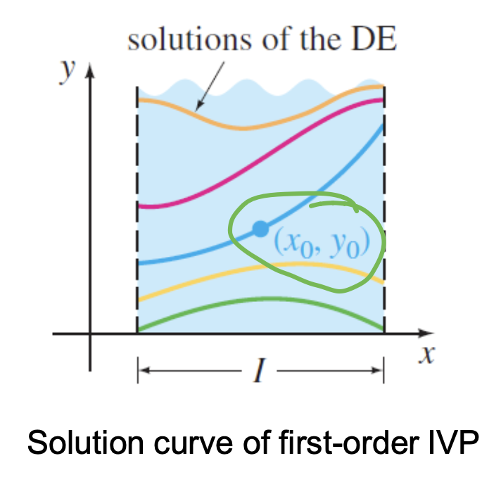
Existence and Uniqueness
Does a solution of the problem exist? If a solution exists, is it unique?
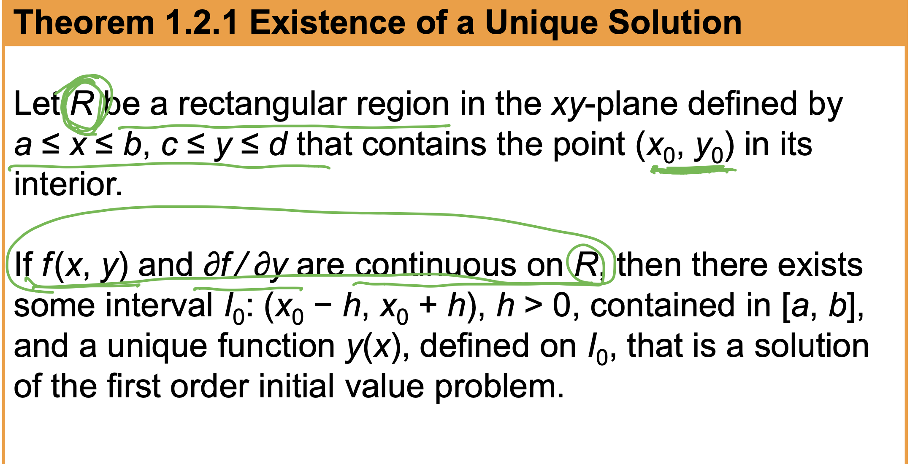
Interval of Existence and Uniqueness
Suppose y(x) represents a solution of the first order initial- value problem. The following three sets on the real x-axis may not be the same:
the domain of the function y(x), D
the interval I over which the solution y(x) is defined or exists,
and the interval \(I_0\) of existence and uniqueness.
let f(p)=p(a-bp)=0 and catogorize the x-axis based on it, discussing the different situation intuitively
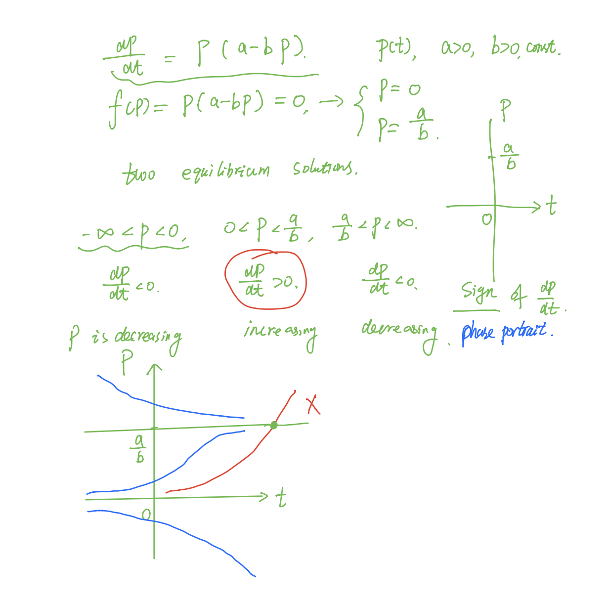
Properties of the solutions of autonomous DE
A solution curve
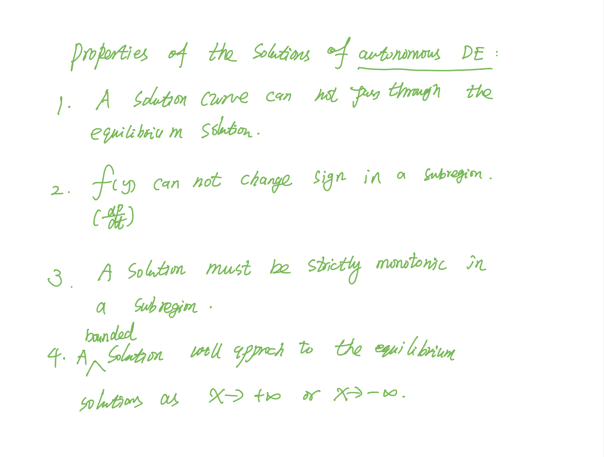
? Translation Property–only autonomous DEs has this property?
meaning: translation?
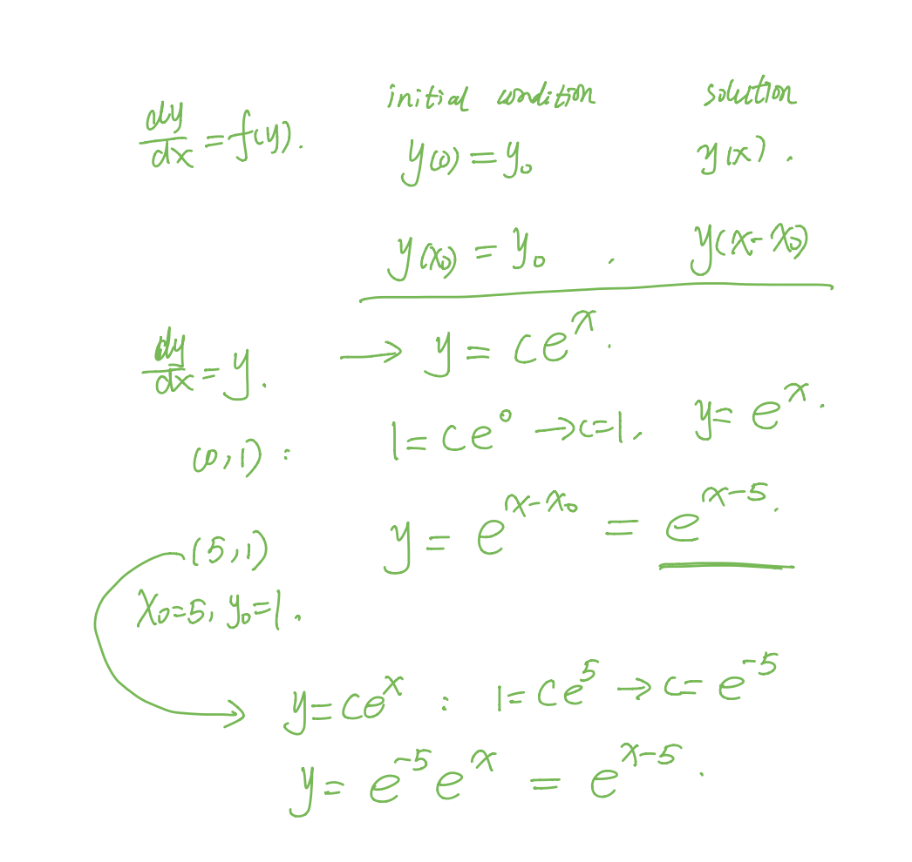
If y(x) is a solution of an autonomous differential equation dy ∕dx = f(y), then y1(x) = y(x − k) (y of (x-k)), k a constant, is also a solution.
Separable Equations
\(\frac {dy}{dx}=g(x)h(y)\)
singular solution
\(\frac {dy}{h(y)}=g(x)dx\). If r is a zero of the function h(y), substituting y=r into dy/dx=g(x)h(y) makes both sides zero (y = r is a constant solution of the differential equation). As a consequence, y = r might not show up in the family of solutions that are obtained after integration and simplification. Such a solution is called a singular solution.
initial value problem
intergral-defined function
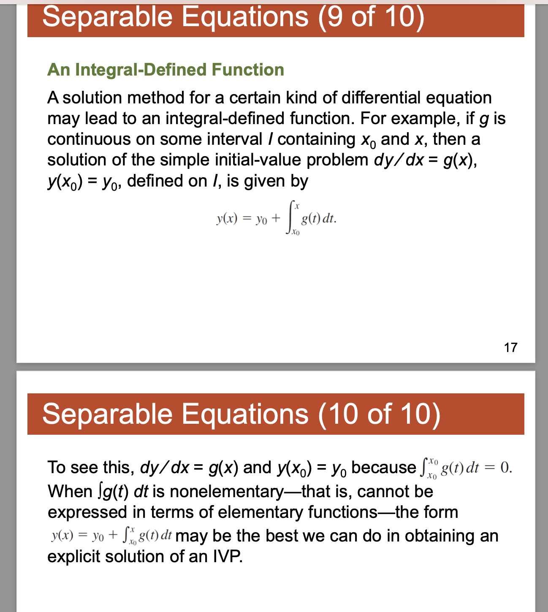
eg
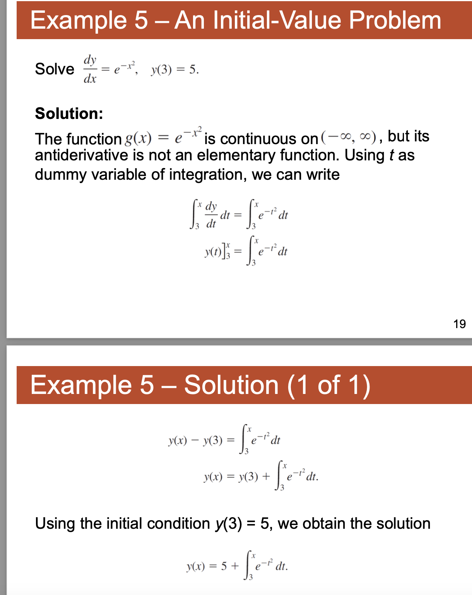
Linear equation
\(a_1(x)\frac{dy}{dx}+a_0(x)y=g(x)\) is said to be a linear equation in the variable y.
standard form:
\(\frac{dy}{dx}+P(x)y=f(x)\)
Integrating factor method
solution
idea: want to written into \(\frac{d}{dx}()=f(x)\) then we assume after multiplying a factor \(\mu(x)\) we can write \(\frac{d}{dx}(\mu(x)y(x))=\mu(x)f(x)\)
we get \(\mu(x) = ce^{\int{p(x)dx}{}}\).
let c=1 we get the integrating factor
IVP
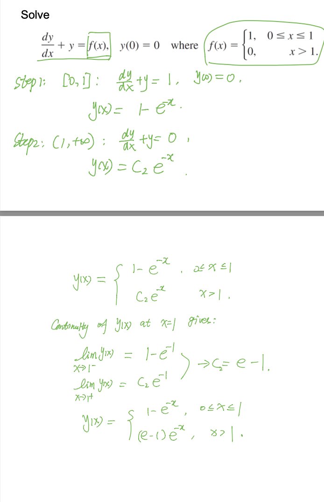
?Error function
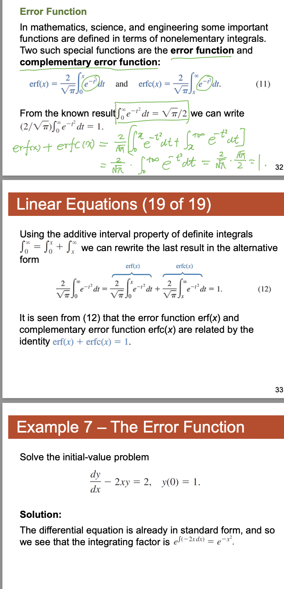
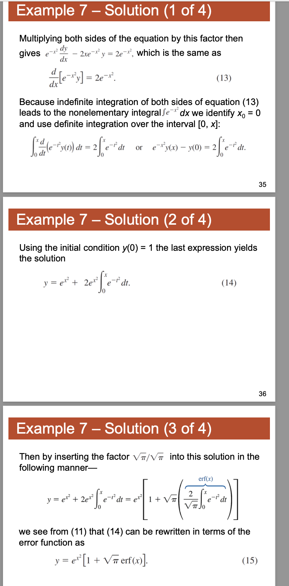
Exact equations
z=f(x,y)=c
Non-exact
Bernouli’s equation
DO Not Remember–understand it instead!
just want to transform the equation to a 1st order differential equation to solve it using integrating factor method.
W7
Homogeneous Linear System
Just follow the idea in \(y''+my'+ny=0\), when facing the linear system \(\cases{{\vec {x'} = A\vec x}\\{ay'+by=0}}\), we also assume that \(\vec {x'} = \vec ke^{\lambda t}\) and substitute it into \(\vec {x'} = Ax\)
phase portrait and stable/ unstable / semi-stable points
? JORDAN FORM AND ODE system?
When we solve \(ay''+by'+cy=0\) if m is a double root, then \(y_1=e^{mx}\), \(y_2=xe^{mx}\)
Naturally, here we assume \(\vec x_2 =\vec k t e^{\lambda t}\), substitute \(\vec x_2\) into the system \(\vec {x'} = Ax\);
LHS = \(\vec {x_2'} = \vec k(e^{\lambda t }+\lambda te^{\lambda t})=A\vec x_2\)=\(A\vec k t e^{\lambda t}\) =RHS